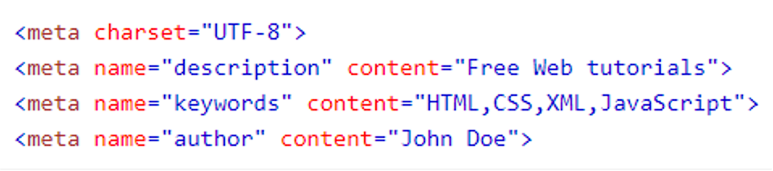
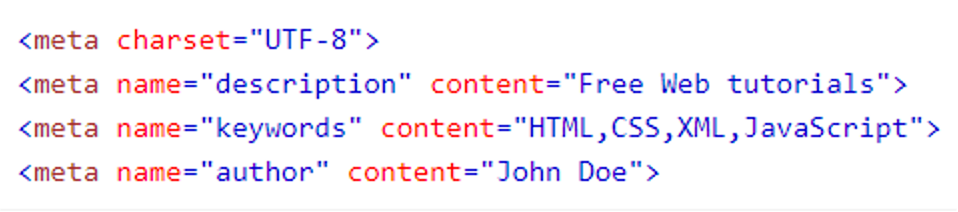

METADADOS
Metadados são dados externos à pagina que são usados pelos navegadores(como exibir conteudos), pelos mecanismos de pesquisa(palavras-chave) e outros serviços da web

Metadados são dados externos à pagina que são usados pelos navegadores(como exibir conteudos), pelos mecanismos de pesquisa(palavras-chave) e outros serviços da web
